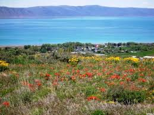

Fish Haven, Idaho
Saturday = Preston Pancakes in the Park! 9:00 a.m. Saturday at the city park pavilion.

Weather Summary
Currently: |
High:
Wind Chill:
Humidity:
Wind Speed:
5-day Forecast
| |
|
|
|
|
Fish Haven Upcoming Events
Fish Haven History

Fish Haven, originally named Rush Creek, is an unincorporated community along the shores
of Bear Lake in Bear Lake County, Idaho, United States. It is 4 km (2.5 miles) north of
the Utah border. The first settlement at Fish Haven was made in 1864. A post office
called Fish Haven was established in 1867 and remained in operation until 1962.
The community was so named because nearby Bear Lake is a favorite fishing spot
-Wikipedia
Contact Information
The Weather Corner:
5221 US Hwy 89
Fish Haven Idaho
☎ 208-600-7159